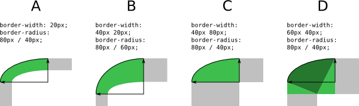
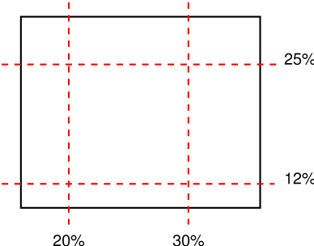
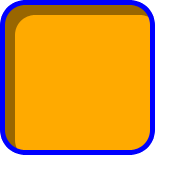
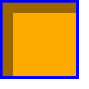

1. Introduction
This subsection is not normative.
When elements are rendered according to the CSS box model [CSS2], each element is either not displayed at all, or formatted as one or more rectangular boxes. Each box has a rectangular content area, a band of padding around the content, a border around the padding, and a margin outside the border. (The margin may actually be negative, but margins have no influence on the background and border.)

The various areas and edges of a typical box. (This diagram is explained in the CSS2.1 Box Model chapter [CSS2].)
The properties of this module deal with the decoration of the border area and with the background of the content, padding and border areas. Additionally the box may be given a "drop-shadow" effect with the box-shadow property.
If an element is broken into multiple boxes, box-decoration-break [CSS3-BREAK] defines how the borders and background are divided over the various boxes. (An element can result in more than one box if it is broken at the end of a line, at the end of a column or at the end of a page; and continued in the next line, column or page.)
The relative stacking order of backgrounds, borders, and shadows is given in this module. For how these layers interact with other rendered content, see Appendix E “Elaborate description of Stacking Contexts” in [CSS2].
2. Values and Interactions
This specification follows the CSS property definition conventions from [CSS2]. Value types not defined in this specification are defined in CSS Values & Units [CSS-VALUES-3]. Other CSS modules may expand the definitions of these value types.
In addition to the property-specific values listed in their definitions, all properties defined in this specification also accept the CSS-wide keywords keywords as their property value. For readability they have not been repeated explicitly.
2.1. Module Interactions
This module replaces and extends the background and border features defined in [CSS2] sections 8.5 and 14.2.
All properties in this module apply to the ::first-letter pseudo-element. The background properties and border-radius properties also apply to the ::first-line pseudo-element. The UA may (but is not required to) apply the border-image or box-shadow properties to ::first-line. The UA must not apply the border-color/style/width properties to ::first-line. [CSS2]
2.2. Value Types
The <image> value type is defined by this
specification as <image> = <uri>. Other value types are defined in
CSS Level 2 Revision 1 [CSS2].
Other CSS modules may expand the definitions of these value types: for
example [CSS3COLOR], when combined with this module, expands the
definition of the <color> value type as used in this specification.
Similarly, [CSS3-IMAGES], when combined with this module,
expands the definition of <image> as used in this specification.
In addition to the property-specific values listed in their definitions, all properties defined in this specification also accept the inherit keyword as their property value. For readability it has not been repeated explicitly.
2.3. Animated Values
It is expected that CSS will include ways to animate transitions between styles. (The section “Animation of property types” of the CSS Transitions module [CSS3-TRANSITIONS] is expected to define how different kinds of values are interpolated during a transition.) In anticipation of that, this module includes a line “Animatable” for each property, which specifies whether and how values of the property can be animated.
3. Backgrounds
Each box has a background layer that may be fully transparent (the default), or filled with a color and/or one or more images. The background properties specify what color (background-color) and images (background-image) to use, and how they are sized, positioned, tiled, etc.
The background properties are not inherited, but the parent box’s background will shine through by default because of the initial transparent value on background-color.
3.1. Layering Multiple Background Images
The background of a box can have multiple layers in CSS3. The number of layers is determined by the number of comma-separated values in the background-image property. Note that a value of none still creates a layer.
Each of the images is sized, positioned, and tiled according to the corresponding value in the other background properties. The lists are matched up from the first value: excess values at the end are not used. If a property doesn’t have enough comma-separated values to match the number of layers, the UA must calculate its used value by repeating the list of values until there are enough.
For example, this set of declarations:
background-image: url(flower.png), url(ball.png), url(grass.png); background-position: center center, 20% 80%, top left, bottom right; background-origin: border-box, content-box; background-repeat: no-repeat;
has exactly the same effect as this set with the extra position dropped and the missing values for background-origin and background-repeat filled in (emphasized for clarity):
background-image: url(flower.png), url(ball.png), url(grass1.png); background-position: center center, 20% 80%, top left; background-origin: border-box, content-box, border-box; background-repeat: no-repeat, no-repeat, no-repeat;
The first image in the list is the layer closest to the user, the next one is painted behind the first, and so on. The background color, if present, is painted below all of the other layers.
Note that the border-image properties can also define a background image, which, if present, is painted on top of the background created by the background properties.
3.2. Base Color: the background-color property
| Name: | background-color |
|---|---|
| Value: | <color> |
| Initial: | transparent |
| Applies to: | all elements |
| Inherited: | no |
| Percentages: | N/A |
| Media: | visual |
| Computed value: | the computed color |
| Animatable: | as color |
This property sets the background color of an element. The color is drawn behind any background images.
The background color is clipped according to the background-clip value associated with the bottom-most background image layer.
3.3. Image Sources: the background-image property
| Name: | background-image |
|---|---|
| Value: | <bg-image># |
| Initial: | none |
| Applies to: | all elements |
| Inherited: | no |
| Percentages: | N/A |
| Media: | visual |
| Computed value: | as specified, but with URIs made absolute |
| Animatable: | no |
This property sets the background image(s) of an element. Images are drawn with the first specified one on top (closest to the user) and each subsequent image behind the previous one. Where
<bg-image> = <image> | none
A value of none counts as an image layer but draws nothing. An image that is empty (zero width or zero height), that fails to download, or that cannot be displayed (e.g., because it is not in a supported image format) likewise counts as a layer but draws nothing.
See the section “Layering multiple background images” for how background-image interacts with other comma-separated background properties to form each background image layer.
When setting a background image, authors should also specify a background-color that will preserve contrast with the text for when the image is unavailable.
For accessibility reasons, authors should not use background images as the sole method of conveying important information. See Web Content Accessibility Guideline F3 [WCAG20]. Images are not accessible in non-graphical presentations, and background images specifically might be turned off in high-contrast display modes.
Note that stylistic foreground images can be provided in CSS with the content property. (Semantically-important foreground images should be provided in the document markup, e.g. with the <img> tag in HTML.)
Media fragments can be used to display a portion of an image. The CSS Images module will provide fallback syntax for image formats and include additional controls for image display.
Some examples specifying background images:
body { background-image: url("marble.svg") }
p { background-image: none }
div { background-image: url(tl.png), url(tr.png) }
Implementations may optimize by not downloading and drawing images that are not visible (e.g., because they are behind other, fully opaque images).
3.4. Tiling Images: the background-repeat property
| Name: | background-repeat |
|---|---|
| Value: | <repeat-style># |
| Initial: | repeat |
| Applies to: | all elements |
| Inherited: | no |
| Percentages: | N/A |
| Media: | visual |
| Computed value: | A list, each item consisting of: two keywords, one per dimension |
| Animatable: | no |
Specifies how background images are tiled after they have been sized and positioned. Where
<repeat-style> = repeat-x | repeat-y | [repeat | space | round | no-repeat]{1,2}
Single values for <repeat-style> have the following meanings:
- repeat-x
- Computes to repeat no-repeat.
- repeat-y
- Computes to no-repeat repeat.
- repeat
- Computes to repeat repeat.
- space
- Computes to space space
- round
- Computes to round round
- no-repeat
- Computes to no-repeat no-repeat
If a <repeat-style> value has two keywords, the first one is for the horizontal direction, the second for the vertical one, as follows:
- repeat
- The image is repeated in this direction as often as needed to cover the background painting area.
- space
- The image is repeated as often as will fit within the background positioning area without being clipped and then the images are spaced out to fill the area. The first and last images touch the edges of the area. If the background painting area is larger than the background positioning area, then the pattern repeats to fill the background painting area. The value of background-position for this direction is ignored, unless there is not enough space for two copies of the image in this direction, in which case only one image is placed and background-position determines its position in this direction.
- round
- The image is repeated as often as will fit within the background positioning area. If it doesn’t fit a whole number of times, it is rescaled so that it does. See the formula under background-size. If the background painting area is larger than the background positioning area, then the pattern repeats to fill the background painting area.
- no-repeat
- The image is placed once and not repeated in this direction.
Unless one of the two keywords is no-repeat, the whole background painting area will be tiled, i.e., not just one vertical strip and one horizontal strip.
body {
background: white url("pendant.png");
background-repeat: repeat-y;
background-position: center;
}

The effect of repeat-y: One copy of the background image is centered, and other copies are put above and below it to make a vertical band behind the element.
body {
background-image: url(dot.png) white;
background-repeat: space
}

The effect of space: the image of a dot is tiled to cover the whole background and the images are equally spaced.
See the section “Layering multiple background images” for how background-repeat interacts with other comma-separated background properties to form each background image layer.
3.5. Affixing Images: the background-attachment property
| Name: | background-attachment |
|---|---|
| Value: | <attachment># |
| Initial: | scroll |
| Applies to: | all elements |
| Inherited: | no |
| Percentages: | N/A |
| Media: | visual |
| Computed value: | as specified |
| Animatable: | no |
If background images are specified, this property specifies whether they are fixed with regard to the viewport (fixed) or scroll along with the element (scroll) or its contents (local). The property’s value is given as a comma-separated list of <attachment> keywords where
<attachment> = scroll | fixed | local
- fixed
- The background is fixed with regard to the viewport. In paged media where there is no viewport, a fixed background is fixed with respect to the page box and therefore replicated on every page. Note that there is only one viewport per view. Even if an element has a scrolling mechanism (see the overflow property [CSS2]), a fixed background doesn’t move with the element.
- local
- The background is fixed with regard to the element’s contents: if the element has a scrolling mechanism, the background scrolls with the element’s contents, and the background painting area and background positioning area are relative to the scrollable area of the element rather than to the border framing them. Because the scrollable area does not include the border area, for scrollable elements the border-box value of background-clip may be treated the same as padding-box.
- scroll
- The background is fixed with regard to the element itself and does not scroll with its contents. (It is effectively attached to the element’s border.)
Even if the image is fixed, it is still only visible when it is in the background painting area of the element or otherwise unclipped. (See “The backgrounds of special elements” for the cases when background images are not clipped.) Thus, unless the image is tiled, it may be invisible.
This example creates an infinite vertical band that remains “glued” to the viewport when the element is scrolled.
body {
background: red url("pendant.gif");
background-repeat: repeat-y;
background-attachment: fixed;
}
User agents that do not support fixed backgrounds (for example due to limitations of the hardware platform) should ignore declarations with the keyword fixed. For example:
body {
/* For all UAs: */
background: white url(paper.png) scroll;
/* For UAs that do fixed backgrounds: */
background: white url(ledger.png) fixed;
}
h1 {
/* For all UAs: */
background: silver;
/* For UAs that do fixed backgrounds: */
background: url(stripe.png) fixed, white url(ledger.png) fixed;
}
See the section “Layering multiple background images” for how background-attachment interacts with other comma-separated background properties to form each background image layer.
3.6. Positioning Images: the background-position property
| Name: | background-position |
|---|---|
| Value: | <bg-position> |
| Initial: | 0% 0% |
| Applies to: | all elements |
| Inherited: | no |
| Percentages: | refer to size of background positioning area minus size of background image; see text |
| Media: | visual |
| Computed value: | A list, each item consisting of: a pair of offsets (horizontal and vertical) from the top left origin each given as a combination of an absolute length and a percentage |
| Animatable: | as repeatable list of simple list of length, percentage, or calc |
If background images have been specified, this property specifies their initial position (after any resizing) within their corresponding background positioning area.
Where
<bg-position> = [ [ left | center | right | top | bottom | <length-percentage> ] | [ left | center | right | <length-percentage> ] [ top | center | bottom | <length-percentage> ] | [ center | [ left | right ] <length-percentage>? ] && [ center | [ top | bottom ] <length-percentage>? ] ]
If only one value is specified, the second value is assumed to be center. If two values are given, a <length-percentage> as the first value represents the horizontal position (or offset) and a <length-percentage> as the second value represents the vertical position (or offset). The <length-percentage> values here represent an offset of the top left corner of the background image from the top left corner of the background positioning area.
Note that a pair of keywords can be reordered while a combination of keyword and length or percentage cannot. So center left is valid while 50% left is not.
If three or four values are given, then each <length-percentage> represents an offset and must be preceded by a keyword, which specifies from which edge the offset is given. For example, background-position: bottom 10px right 20px represents a 10px vertical offset up from the bottom edge and a 20px horizontal offset leftward from the right edge. If three values are given, the missing offset is assumed to be zero.
Positive values represent an offset inward from the edge of the background positioning area. Negative values represent an offset outward from the edge of the background positioning area.
The following declarations give the stated (horizontal, vertical) offsets from the top left corner:
background-position: left 10px top 15px; /* 10px, 15px */ background-position: left top ; /* 0px, 0px */ background-position: 10px 15px; /* 10px, 15px */ background-position: left 15px; /* 0px, 15px */ background-position: 10px top ; /* 10px, 0px */ background-position: left top 15px; /* 0px, 15px */ background-position: left 10px top ; /* 10px, 0px */
- <percentage>
-
A percentage for the horizontal offset is relative to (width of background positioning area - width of background image). A percentage for the vertical offset is relative to (height of background positioning area - height of background image), where the size of the image is the size given by background-size.
For example, with a value pair of 0% 0%, the upper left corner of the image is aligned with the upper left corner of, usually, the box’s padding edge. A value pair of 100% 100% places the lower right corner of the image in the lower right corner of the area. With a value pair of 75% 50%, the point 75% across and 50% down the image is to be placed at the point 75% across and 50% down the area.

Diagram of the meaning of background-position: 75% 50%.
- <length>
- A length value gives a fixed length as the offset. For example, with a value pair of 2cm 1cm, the upper left corner of the image is placed 2cm to the right and 1cm below the upper left corner of the background positioning area.
- top
- Computes to 0% for the vertical position if one or two values are given, otherwise specifies the top edge as the origin for the next offset.
- right
- Computes to 100% for the horizontal position if one or two values are given, otherwise specifies the right edge as the origin for the next offset.
- bottom
- Computes to 100% for the vertical position if one or two values are given, otherwise specifies the bottom edge as the origin for the next offset.
- left
- Computes to 0% for the horizontal position if one or two values are given, otherwise specifies the left edge as the origin for the next offset.
- center
- Computes to 50% (left 50%) for the horizontal position if the horizontal position is not otherwise specified, or 50% (top 50%) for the vertical position if it is.
The following background shorthand declarations use keywords to set background-position to the stated percentage values.
body { background: url("banner.jpeg") right top } /* 100% 0% */
body { background: url("banner.jpeg") top center } /* 50% 0% */
body { background: url("banner.jpeg") center } /* 50% 50% */
body { background: url("banner.jpeg") bottom } /* 50% 100% */
In the example below, the (single) image is placed in the lower-right corner of the viewport.
body {
background-image: url("logo.png");
background-attachment: fixed;
background-position: 100% 100%;
background-repeat: no-repeat;
}
Background positions can also be relative to other corners than the top left. E.g., the following puts the background image 10px from the bottom and 3em from the right:
background-position: right 3em bottom 10px
See the section “Layering multiple background images” for how background-position interacts with other comma-separated background properties to form each background image layer.
3.7. Painting Area: the background-clip property
| Name: | background-clip |
|---|---|
| Value: | <box># |
| Initial: | border-box |
| Applies to: | all elements |
| Inherited: | no |
| Percentages: | N/A |
| Media: | visual |
| Computed value: | as specified |
| Animatable: | no |
Determines the background painting area, which determines the area within which the background is painted. The syntax of the property is given with
<box> = border-box | padding-box | content-box
Values have the following meanings:
- border-box
- The background is painted within (clipped to) the border box.
- padding-box
- The background is painted within (clipped to) the padding box.
- content-box
- The background is painted within (clipped to) the content box.
Note that the root element has a different background painting area, and thus the background-clip property has no effect when specified on it. See “The backgrounds of special elements.”
Note that the background is always drawn behind the border, if any. See “Elaborate description of Stacking Contexts” in [CSS2].
See the section on Corner Shaping for how border-radius affects the shape of the background painting area.
See the section “Layering multiple background images” for how background-clip interacts with other comma-separated background properties to form each background image layer.
3.8. Positioning Area: the background-origin property
| Name: | background-origin |
|---|---|
| Value: | <box># |
| Initial: | padding-box |
| Applies to: | all elements |
| Inherited: | no |
| Percentages: | N/A |
| Media: | visual |
| Computed value: | as specified |
| Animatable: | no |
For elements rendered as a single box, specifies the background positioning area. For elements rendered as multiple boxes (e.g., inline boxes on several lines, boxes on several pages), specifies which boxes box-decoration-break [CSS3-BREAK] operates on to determine the background positioning area(s).
- padding-box
- The position is relative to the padding box. (For single boxes 0 0 is the upper left corner of the padding edge, 100% 100% is the lower right corner.)
- border-box
- The position is relative to the border box.
- content-box
- The position is relative to the content box.
If the background-attachment value for this image is fixed, then this property has no effect: in this case the background positioning area is the initial containing block [CSS2].
Note that if background-clip is padding-box, background-origin is border-box, background-position is top left (the initial value), and the element has a non-zero border, then the top and left of the background image will be clipped.
See the section “Layering multiple background images” for how background-origin interacts with other comma-separated background properties to form each background image layer.
3.9. Sizing Images: the background-size property
| Name: | background-size |
|---|---|
| Value: | <bg-size># |
| Initial: | auto |
| Applies to: | all elements |
| Inherited: | no |
| Percentages: | see text |
| Media: | visual |
| Computed value: | as specified, but with lengths made absolute and omitted auto keywords filled in |
| Animatable: | as repeatable list of simple list of length, percentage, or calc and keywords |
Specifies the size of the background images. Where
<bg-size> = [ <length-percentage> | auto ]{1,2} | cover | contain
Values have the following meanings:
- contain
- Scale the image, while preserving its intrinsic aspect ratio (if any), to the largest size such that both its width and its height can fit inside the background positioning area.
- cover
- Scale the image, while preserving its intrinsic aspect ratio (if any), to the smallest size such that both its width and its height can completely cover the background positioning area.
- [ <length-percentage> | auto ]{1,2}
-
The first value gives the width of the corresponding image, the second value its height. If only one value is given the second is assumed to be auto.
A percentage is relative to the background positioning area.
An auto value for one dimension is resolved by using the image’s intrinsic ratio and the size of the other dimension, or failing that, using the image’s intrinsic size, or failing that, treating it as 100%.
If both values are auto then the intrinsic width and/or height of the image should be used, if any, the missing dimension (if any) behaving as auto as described above. If the image has neither an intrinsic width nor an intrinsic height, its size is determined as for contain.
Negative values are not allowed.
Here are some examples. The first example stretches the background image independently in both dimensions to completely cover the content area:
div {
background-image: url(plasma.png);
background-repeat: no-repeat;
background-size: 100% 100%;
background-origin: content-box }
The second example stretches the image so that exactly two copies fit horizontally. The aspect ratio is preserved:
p {
background-image: url(tubes.png);
background-size: 50% auto;
background-origin: border-box }
This example forces the background image to be 15 by 15 pixels:
para {
background-size: 15px 15px;
background-image: url(tile.png)}
This example uses the image’s intrinsic size. Note that this is the only possible behavior in CSS level 1 and 2.
body {
background-size: auto; /* default */
background-image: url(flower.png) }
The following example rounds the height of the image to 33.3%, up from the specified value of 30%. At 30%, three images would fit entirely and a fourth only partially. After rounding, three images fit. The width of the image is 20% of the background area width and is not rounded.
p {
background-image: url(chain.png);
background-repeat: no-repeat round;
background-size: 20% 30% }
If background-repeat is round for one (or both) dimensions, there is a second step. The UA must scale the image in that dimension (or both dimensions) so that it fits a whole number of times in the background positioning area. In the case of the width (height is analogous):
If X ≠ 0 is the width of the image after step one and W is the width of the background positioning area, then the rounded width X' = W / round(W / X) where round() is a function that returns the nearest natural number (integer greater than zero).
If background-repeat is round for one dimension only and if background-size is auto for the other dimension, then there is a third step: that other dimension is scaled so that the original aspect ratio is restored.
In this example the background image is shown at its intrinsic size:
div {
background-image: url(image1.png);
background-repeat: repeat; /* default */
background-size: auto } /* default */
In the following example, the background is shown with a width of 3em and its height is scaled proportionally to keep the original aspect ratio:
div {
background-image: url(image2.png);
background-repeat: repeat; /* default */
background-size: 3em } /* = '3em auto' */
In the following example, the background is shown with a width of approximately 3em: scaled so that it fits a whole number of times in the width of the background. The height is scaled proportionally to keep the original aspect ratio:
div {
background-image: url(image3.png);
background-repeat: round repeat;
background-size: 3em auto }
In the following example, the background image is shown with a width of 3em and a height that is either the height corresponding to that width at the original aspect ratio or slightly less:
div {
background-image: url(image4.png);
background-repeat: repeat round;
background-size: 3em auto }
In the following example, the background image is shown with a height of approximately 4em: scaled slightly so that it fits a whole number of times in the background height. The width is the approximately the width that correspond to a 4em height at the original aspect ratio: scaled slightly so that it fits a whole number of times in the background width.
div {
background-image: url(image5.png);
background-repeat: round;
background-size: auto 4em }
If the background image’s width or height resolves to zero, this causes the image not to be displayed. (The effect is the same as if it had been a transparent image.)
See the section “Layering multiple background images” for how background-size interacts with other comma-separated background properties to form each background image layer.
3.10. Backgrounds Shorthand: the background property
| Name: | background |
|---|---|
| Value: | <bg-layer># , <final-bg-layer> |
| Initial: | see individual properties |
| Applies to: | all elements |
| Inherited: | no |
| Percentages: | see individual properties |
| Media: | visual |
| Computed value: | see individual properties |
| Animatable: | see individual properties |
Where
<bg-layer> = <bg-image> || <bg-position> [ / <bg-size> ]? || <repeat-style> || <attachment> || <box> || <box>
<final-bg-layer> = <‘background-color’> || <bg-image> || <bg-position> [ / <bg-size> ]? || <repeat-style> || <attachment> || <box> || <box>
Note that a color is permitted in <final-bg-layer>, but not in <bg-layer>.
The background property is a shorthand property for setting most background properties at the same place in the style sheet. The number of comma-separated items defines the number of background layers. Given a valid declaration, for each layer the shorthand first sets the corresponding layer of each of background-image, background-position, background-size, background-repeat, background-origin, background-clip and background-attachment to that property’s initial value, then assigns any explicit values specified for this layer in the declaration. Finally background-color is set to the specified color, if any, else set to its initial value.
If one <box> value is present then it sets both background-origin and background-clip to that value. If two values are present, then the first sets background-origin and the second background-clip.
In the first rule of the following example, only a value for background-color has been given and the other individual properties are set to their initial values. In the second rule, many individual properties have been specified.
body { background: red }
p { background: url("chess.png") 40% / 10em gray
round fixed border-box; }
The first rule is equivalent to:
body {
background-color: red;
background-position: 0% 0%;
background-size: auto;
background-repeat: repeat;
background-clip: border-box;
background-origin: padding-box;
background-attachment: scroll;
background-image: none }
The second is equivalent to:
p {
background-color: gray;
background-position: 40% 50%;
background-size: 10em 10em;
background-repeat: round;
background-clip: border-box;
background-origin: border-box;
background-attachment: fixed;
background-image: url(chess.png) }
The following example shows how a both a background color (#CCC) and a background image (url(metal.jpg)) are set. The image is rescaled to the full width of the element:
E { background: #CCC url("metal.jpg") top left / 100% auto no-repeat}
Another example shows equivalence:
div { background: padding-box url(paper.jpg) white center }
div {
background-color: white;
background-image: url(paper.jpg);
background-repeat: repeat;
background-attachment: scroll;
background-position: center;
background-clip: padding-box;
background-origin: padding-box;
background-size: auto auto }
The following declaration with multiple, comma-separated values
background: url(a.png) top left no-repeat,
url(b.png) center / 100% 100% no-repeat,
url(c.png) white;
is equivalent to
background-image: url(a.png), url(b.png), url(c.png); background-position: top left, center, top left; background-repeat: no-repeat, no-repeat, repeat; background-clip: border-box, border-box, border-box; background-origin: padding-box, padding-box, padding-box; background-size: auto auto, 100% 100%, auto auto; background-attachment: scroll, scroll, scroll; background-color: white;
3.11. Backgrounds of Special Elements
The document canvas is the infinite surface over which the document is rendered. [CSS2] Since no element corresponds to the canvas, in order to allow styling of the canvas CSS propagates the background of the root element (or, in the case of HTML, the <body> element) as described below. However, if no boxes are generated for the element whose background would be used for the canvas (for example, if the root element has display: none), then the canvas background is transparent.
Note that an element might be invisible, but still generate boxes. For example, if the element has visibility: hidden but not display: none, boxes are generated for it and its background is used for the canvas.
If the canvas background is not opaque, what shows through is UA-dependent.
3.11.1. The Canvas Background and the Root Element
The background of the root element becomes the background of the canvas and its background painting area extends to cover the entire canvas. However, any images are sized and positioned relative to the root element as if they were painted for that element alone. (In other words, the background positioning area is determined as for the root element.) The root element does not paint this background again, i.e., the used value of its background is transparent.
3.11.2. The Canvas Background and the HTML <body> Element
For documents whose root element is an HTML HTML element [HTML401] or an XHTML html element [XHTML11]: if the computed
value of background-image on the root element is none and its background-color is transparent, user agents must instead propagate
the computed values of the background properties from that element’s first
HTML BODY or XHTML body child element. The used values of that BODY element’s
background properties are their initial values, and the propagated values
are treated as if they were specified on the root element.
It is recommended that authors of HTML documents specify the canvas background
for the BODY element rather than the HTML element.
According to these rules, the canvas underlying the following HTML document will have a “marble” background:
<!DOCTYPE html PUBLIC '-//W3C//DTD HTML 4.0//EN'
>
<html>
<head>
<title>Setting the canvas background</title>
<style type="text/css">
body { background: url("http://example.org/marble.png") }
</style>
</head>
<body>
<p>My background is marble.</p>
</body>
</html>
3.11.3. The ::first-line Pseudo-element‘s Background
The ::first-line pseudo-element is like an inline-level element for the purposes of the background (see section 5.12.1 of [CSS2]). That means, e.g., that in a left-justified first line, the background does not necessarily extend all the way to the right margin.
4. Borders
The border can either be a predefined style (solid line, double line, dotted line, pseudo-3D border, etc.) or it can be an image. In the former case, various properties define the style (border-style), color (border-color), and thickness (border-width) of the border.
4.1. Line Colors: the border-color properties
| Name: | border-top-color, border-right-color, border-bottom-color, border-left-color |
|---|---|
| Value: | <color> |
| Initial: | currentColor |
| Applies to: | all elements |
| Inherited: | no |
| Percentages: | N/A |
| Media: | visual |
| Computed value: | the computed color |
| Animatable: | as color |
| Name: | border-color |
|---|---|
| Value: | <color>{1,4} |
| Initial: | (see individual properties) |
| Applies to: | all elements |
| Inherited: | no |
| Percentages: | N/A |
| Media: | visual |
| Computed value: | see individual properties |
| Animatable: | see individual properties |
These properties set the foreground color of the border specified by the border-style properties.
Border-color is a shorthand for the four border-*-color properties. The four values set the top, right, bottom and left border, respectively. A missing left is the same as right, a missing bottom is the same as top, and a missing right is also the same as top.
4.2. Line Patterns: the border-style properties
| Name: | border-top-style, border-right-style, border-bottom-style, border-left-style |
|---|---|
| Value: | <line-style> |
| Initial: | none |
| Applies to: | all elements |
| Inherited: | no |
| Percentages: | N/A |
| Media: | visual |
| Computed value: | specified value |
| Animatable: | no |
| Name: | border-style |
|---|---|
| Value: | <line-style>{1,4} |
| Initial: | (see individual properties) |
| Applies to: | all elements |
| Inherited: | no |
| Percentages: | N/A |
| Media: | visual |
| Computed value: | see individual properties |
| Animatable: | see individual properties |
These properties control whether a border appears, and if it does what style it’s drawn in (if it is not overridden by a border image).
Border-style is a shorthand for the other four. Its four values set the top, right, bottom and left border respectively. A missing left is the same as right, a missing bottom is the same as top, and a missing right is also the same as top.
Where
<line-style> = none | hidden | dotted | dashed | solid | double | groove | ridge | inset | outset
Values have the following meanings:
- none
- No border. Color and width are ignored (i.e., the border has width 0). Note this means that the initial value of border-image-width will also resolve to zero.
- hidden
- Same as none, but has different behavior in the border conflict resolution rules for border-collapsed tables [CSS2].
- dotted
- A series of round dots.
- dashed
- A series of square-ended dashes.
- solid
- A single line segment.
- double
- Two parallel solid lines with some space between them. (The thickness of the lines is not specified, but the sum of the lines and the space must equal border-width.)
- groove
- Looks as if it were carved in the canvas. (This is typically achieved by creating a “shadow” from two colors that are slightly lighter and darker than the border-color.)
- ridge
- Looks as if it were coming out of the canvas.
- inset
- Looks as if the content on the inside of the border is sunken into the canvas. Treated as ridge in the collapsing border model. [CSS2]
- outset
- Looks as if the content on the inside of the border is coming out of the canvas. Treated as groove in the collapsing border model. [CSS2]
Borders are drawn in front of the element’s background, but behind the element’s content (in case it overlaps).

Example renderings of the predefined border styles.
Note: Border colors close to black or white may need different color calculations than colors in between in order to create the required “3D” effect of groove, ridge, inset, or outset.
Note: There is no control over the spacing of the dots and dashes, nor over the length of the dashes. Implementations are encouraged to choose a spacing that makes the corners symmetrical.
Note: This specification does not define how borders of different styles should be joined in the corner. Also note that rounded corners may cause the corners and the contents to overlap, if the padding is less than the radius of the corner.
4.3. Line Thickness: the border-width properties
| Name: | border-top-width, border-right-width, border-bottom-width, border-left-width |
|---|---|
| Value: | <line-width> |
| Initial: | medium |
| Applies to: | all elements |
| Inherited: | no |
| Percentages: | N/A |
| Media: | visual |
| Computed value: | absolute length; zero if the border style is none or |
| Animatable: | as length |
| Name: | border-width |
|---|---|
| Value: | <line-width>{1,4} |
| Initial: | (see individual properties) |
| Applies to: | all elements |
| Inherited: | no |
| Percentages: | see individual properties |
| Media: | visual |
| Computed value: | see individual properties |
| Animatable: | see individual properties |
These properties set the thickness of the border. Where
<line-width> = <length> | thin | medium | thick
The lengths corresponding to thin, medium, and thick are not specified, but the values are constant throughout a document and thin ≤ medium ≤ thick. A UA could, e.g., make the thickness depend on the medium font size: one choice might be 1, 3 & 5px when the medium font size is 17px or less. Negative <length> values are not allowed.
Border-width is a shorthand that sets the four border-*-width properties. If it has four values, they set top, right, bottom and left in that order. If left is missing, it is the same as right; if bottom is missing, it is the same as top; if right is missing, it is the same as top.
Note that the initial width is medium, but the initial style is none and therefore the used width is 0.
4.4. Border Shorthand Properties
| Name: | border-top, border-right, border-bottom, border-left |
|---|---|
| Value: | <line-width> || <line-style> || <color> |
| Initial: | See individual properties |
| Applies to: | all elements |
| Inherited: | no |
| Percentages: | N/A |
| Media: | visual |
| Computed value: | see individual properties |
| Animatable: | see individual properties |
This is a shorthand property for setting the width, style, and color of the top, right, bottom, and left border of a box. Omitted values are set to their initial values.
| Name: | border |
|---|---|
| Value: | <line-width> || <line-style> || <color> |
| Initial: | See individual properties |
| Applies to: | all elements |
| Inherited: | no |
| Percentages: | N/A |
| Media: | visual |
| Computed value: | see individual properties |
| Animatable: | see individual properties |
The border property is a shorthand property for setting the same width, color, and style for all four borders of a box. Unlike the shorthand margin and padding properties, the border property cannot set different values on the four borders. To do so, one or more of the other border properties must be used.
The border shorthand also resets border-image to its initial value. It is therefore recommended that authors use the border shorthand, rather than other shorthands or the individual properties, to override any border settings earlier in the cascade. This will ensure that border-image has also been reset to allow the new styles to take effect.
The CSS Working Group intends for the border shorthand to reset all border properties in future levels of CSS as well. For example, if a border-characters property is introduced in the future to allow glyphs as borders, it will also be reset by the border shorthand. By using the border shorthand to reset borders, authors can be guaranteed a “blank canvas” no matter what properties are introduced in the future.
For example, the first rule below is equivalent to the set of five rules shown after it:
p { border: solid red }
p {
border-top: solid red;
border-right: solid red;
border-bottom: solid red;
border-left: solid red;
border-image: none;
}
Since, to some extent, the properties have overlapping functionality, the order in which the rules are specified is important.
Consider this example:
blockquote {
border-color: red;
border-left: double;
color: black
}
In the above example, the color of the left border is black, while the other borders are red. This is due to border-left setting the width, style, and color. Since the color value is not given by the border-left property, it will be taken from the color property. The fact that the color property is set after the border-left property is not relevant.
5. Rounded Corners
5.1. Curve Radii: the border-radius properties
| Name: | border-top-left-radius, border-top-right-radius, border-bottom-right-radius, border-bottom-left-radius |
|---|---|
| Value: | <length-percentage>{1,2} |
| Initial: | 0 |
| Applies to: | all elements (but see prose) |
| Inherited: | no |
| Percentages: | Refer to corresponding dimension of the border box. |
| Media: | visual |
| Computed value: | two absolute <length> or percentages |
| Animatable: | as two values of length, percentage, or calc |
| Name: | border-radius |
|---|---|
| Value: | <length-percentage>{1,4} [ / <length-percentage>{1,4} ]? |
| Initial: | see individual properties |
| Applies to: | all elements (but see prose) |
| Inherited: | no |
| Percentages: | Refer to corresponding dimension of the border box. |
| Media: | visual |
| Computed value: | see individual properties |
| Animatable: | see individual properties |
The two <length-percentage> values of the border-*-radius properties define the radii of a quarter ellipse that defines the shape of the corner of the outer border edge (see the diagram below). The first value is the horizontal radius, the second the vertical radius. If the second value is omitted it is copied from the first. If either length is zero, the corner is square, not rounded. Percentages for the horizontal radius refer to the width of the border box, whereas percentages for the vertical radius refer to the height of the border box. Negative values are not allowed.

The two values of border-top-left-radius: 55pt 25pt define the curvature of the corner.
This example draws ovals of 15em wide and 10em high:
DIV.standout {
width: 13em;
height: 8em;
border: solid black 1em;
border-radius: 7.5em 5em }
The border-radius shorthand sets all four border-*-radius properties. If values are given before and after the slash, then the values before the slash set the horizontal radius and the values after the slash set the vertical radius. If there is no slash, then the values set both radii equally. The four values for each radii are given in the order top-left, top-right, bottom-right, bottom-left. If bottom-left is omitted it is the same as top-right. If bottom-right is omitted it is the same as top-left. If top-right is omitted it is the same as top-left.
border-radius: 4em;
is equivalent to
border-top-left-radius: 4em; border-top-right-radius: 4em; border-bottom-right-radius: 4em; border-bottom-left-radius: 4em;
and
border-radius: 2em 1em 4em / 0.5em 3em;
is equivalent to
border-top-left-radius: 2em 0.5em; border-top-right-radius: 1em 3em; border-bottom-right-radius: 4em 0.5em; border-bottom-left-radius: 1em 3em;
5.2. Corner Shaping
The padding edge (inner border) radius is the outer border radius minus the corresponding border thickness. In the case where this results in a negative value, the inner radius is zero. (In such cases its center might not coincide with that of the outer border curve.) Likewise the content edge radius is the padding edge radius minus the corresponding padding, or if that is negative, zero. The border and padding thicknesses in the curved region are thus interpolated from the adjoining sides, and when two adjoining borders are of different thicknesses the corner will show a smooth transition between the thicker and thinner borders.
All border styles (solid, dotted, inset, etc.) follow the curve of the border.

The effect of a rounded corner when the two borders it connects are of unequal thickness (left) and the effect of a rounded corner on borders that are thicker than the radius of the corner (right).
Note that if the center of a corner’s outer curve is past an opposite padding edge (in the border area of a side opposite the corner), the inner curve will not be a full quarter ellipse.
p { width: 70px; height: 70px; border: solid 30px;
border-color: orange orange silver silver;
border-top-right-radius: 100%; }
| 
|
Where the border-radius curve extends into the opposite sides' borders, the arc of the padding edge is less than 90°.
The margin edge, being outside the border edge, calculates its radius by adding the corresponding margin thickness to each border radius. However, in order to create a sharper corner when the border radius is small, when the border radius is less than the margin, the margin is multiplied by the proportion 1 + (r-1)3, where r is the ratio of the border radius to the margin, in calculating the corner radii of the margin box shape.
5.3. Corner Clipping
A box’s backgrounds, but not its border-image, are clipped to the appropriate curve (as determined by background-clip). Other effects that clip to the border or padding edge (such as overflow other than visible) also must clip to the curve. The content of replaced elements is always trimmed to the content edge curve.
Also, the area outside the curve of the border edge does not accept pointer events on behalf of the element.
As border-radius reduces the interactive area of an element authors should make sure the remaining interactive area conforms to recommended minima for the platforms they target; in particular, conforming to recommended minimum touch target sizes may require larger widths and heights when border-radius is used.
This example adds appropriate padding, so that the contents do not overflow the corners. Note that there is no border, but the background will still have rounded corners.
DIV {
background: black;
color: white;
border-radius: 1em;
padding: 1em }
5.4. Color and Style Transitions
Color and style transitions must be contained within the segment of the border that intersects the smallest rectangle that contains both border radii as well as the center of the inner curve (which may be a point representing the corner of the padding edge, if the border radii are smaller than the border-width).
If one of these borders is zero-width, then the other border takes up the entire transitional area. Otherwise, the center of color and style transitions between adjoining borders is a point along the curve that is a continuous monotonic function of the ratio of the border widths. However it is not defined what these transitions look like or what function maps from this ratio to a point on the curve.

Given these corner shapes, color and style transitions must be contained within the green region. In case D the rectangle defined by the border radii does not include the center of the inner curve (which is a sharp corner), so the transition region is expanded to include that corner. Transitions may take up the entire transition region, but are not required to: For example, a gradient color transition between two solid border styles might take up only the region bounded by the tips of the outer radii and the tips of the inner radii (represented in case D by the dark green region).
5.5. Overlapping Curves
Corner curves must not overlap: When the sum of any two adjacent border radii exceeds the size of the border box, UAs must proportionally reduce the used values of all border radii until none of them overlap. The algorithm for reducing radii is as follows:
Let f = min(Li/Si), where i ∈ {top, right, bottom, left}, Si is the sum of the two corresponding radii of the corners on side i, and Ltop = Lbottom = the width of the box, and Lleft = Lright = the height of the box. If f < 1, then all corner radii are reduced by multiplying them by f.
Note that this formula ensures that quarter circles remain quarter circles and large radii remain larger than smaller ones, but it may reduce corners that were already small enough, which may make borders of nearby elements that should look the same look different.
If the curve interferes with UI elements such as scrollbars, the UA may further reduce the used value of the affected border radii (and only the affected border radii) as much as necessary, but no more.
For example, the borders A of the figure below might be the result of
box-sizing: border-box; width: 6em; height: 2.5em; border-radius: 0.5em 2em 0.5em 2em
The height (2.5em) is enough for the specified radii (0.5em plus 2.0em). However, if the height is only 2em,
box-sizing: border-box; width: 6em; height: 2em; border-radius: 0.5em 2em 0.5em 2em
all corners need to be reduced by a factor 0.8 to make them fit. The used border radii thus are 0.4em (instead of 0.5em) and 1.6em (instead of 2em). See borders B in the figure.
![[image: rectangle with two tiny
rounded corners and two very large ones, on opposite corners]](images/corner-large-mix.png)
These rounded corner might be the result of 'width: 6em; height: 2.5em; border-radius: 0.5em 2em 0.5em 2em' for A; and ditto but with 'height: 2em' for B.
5.6. Effect on Tables
The border-radius properties do apply to table, inline-table, and table-cell boxes in separated borders mode (border-collapse: separate). When border-collapse is collapse, they have no effect.
6. Border Images
Authors can specify an image to be used in place of the border styles. In this case, the border’s design is taken from the sides and corners of an image specified with border-image-source, whose pieces may be sliced, scaled and stretched in various ways to fit the size of the border image area. The border-image properties do not affect layout: layout of the box, its content, and surrounding content is based on the border-width and border-style properties only.
This example creates a top and bottom border consisting of a whole number of orange diamonds and a left and right border of a single, stretched diamond. The corners are diamonds of a different color. The image to tile is as follows. Apart from the diamonds, it is transparent:

The image is 81 by 81 pixels and has to be divided into 9 equal parts. The style rules could thus be as follows:
DIV {
border: double orange 1em;
border-image: url("border.png") 27 round stretch;
}
The result, when applied to a DIV of 12 by 5em, will be similar to this:

This shows a more complicated example, demonstrating how the border image corresponds to the fallback border-style but can also extend beyond the border area. The border image is a wavy green border with an extended corner effect:

The border-image-source image, with the four border-image-slice cuts at 124px dividing the image into nine parts.
The rest of the border properties then interact to lay out the tiles as follows:
![Diagram: The image-less (fallback)
rendering has a green double border. The rendering with border-image
shows the wavy green border, with the waves getting longer as they
reach the corners. The corner tiles render as 124px-wide squares and
the side tiles repeat a whole number of times to fill the space in
between. Because of the gradual corner effects, the tiles extend deep
into the padding area. The whole border image effect is outset 31px, so
that the troughs of the waves align just outside the padding edge.](images/border-image.png)
Diagram of all border-image properties and how they interact, and showing the rendering with and without the border-image in effect.
Here, even though the border-width is 12px, the border-image-width property computes to 124px. The border-image area is then outset 31px from the border-box and into the margin area. If the border-image fails to load (or border images are not supported by the UA), the fallback rendering uses a green double border.
Notice that the border shorthand resets border-image. This makes it easy to turn off or reset all border effects:
.notebox {
border: double orange;
/* must set 'border' shorthand first, otherwise it erases 'border-image' */
border-image: url("border.png") 30 round;
/* but other 'border' properties can be set after */
border-width: thin thick;
}
...
.sidebar .notebox {
box-shadow: 0 0 5px gray;
border-radius: 5px;
border: none; /* turn off all borders */
/* 'border' shorthand resets 'border-image' */
}
6.1. Image Source: the border-image-source property
| Name: | border-image-source |
|---|---|
| Value: | none | <image> |
| Initial: | none |
| Applies to: | All elements, except internal table elements when border-collapse is collapse |
| Inherited: | no |
| Percentages: | N/A |
| Media: | visual |
| Computed value: | none or the image with its URI made absolute |
| Animatable: | no |
Specifies an image to use in place of the rendering specified by the border-style properties and, if given the fill keyword in border-image-slice, as an additional image backdrop for the element. If the value is none or if the image cannot be displayed (or the property doesn’t apply), the border styles will be used; otherwise the element’s border-style borders are not drawn and the border image is drawn as described in the sections below.
6.2. Image Slicing: the border-image-slice property
| Name: | border-image-slice |
|---|---|
| Value: | [<number> | <percentage>]{1,4} && fill? |
| Initial: | 100% |
| Applies to: | All elements, except internal table elements when border-collapse is collapse |
| Inherited: | no |
| Percentages: | refer to size of the border image |
| Media: | visual |
| Computed value: | as four values, each a number or percentage, and optionally a fill keyword |
| Animatable: | no |
This property specifies inward offsets from the top, right, bottom, and left edges of the image, dividing it into nine regions: four corners, four edges and a middle. The middle image part is discarded (treated as fully transparent) unless the fill keyword is present. (It is drawn over the background; see Drawing the Border Image.)
When four values are specified, they set the offsets on the top, right, bottom and left sides in that order. If the left is missing, it is the same as the right; if the bottom is missing, it is the same as the top; if the right is missing, it is the same as the top.
- <percentage>
- Percentages are relative to the size of the image: the width of the image for the horizontal offsets, the height for vertical offsets.
- <number>
- Numbers represent pixels in the image (if the image is a raster image) or vector coordinates (if the image is a vector image).
- fill
- The fill keyword, if present, causes the middle part of the border-image to be preserved. (By default it is discarded, i.e., treated as empty.)
Negative values are invalid. Computed values larger than the size of the image are interpreted as 100%.
The regions given by the border-image-slice values may overlap. However if the sum of the right and left widths is equal to or greater than the width of the image, the images for the top and bottom edge and the middle part are empty, which has the same effect as if a nonempty transparent image had been specified for those parts. Analogously for the top and bottom values.
If the image must be sized to determine the slices (for example, for SVG images with no intrinsic size), then it is sized using the default sizing algorithm with no specified size and the border image area as the default object size.

Diagram illustrating the cuts corresponding to the value 25% 30% 12% 20%
6.3. Drawing Areas: the border-image-width property
| Name: | border-image-width |
|---|---|
| Value: | [ <length-percentage> | <number> | auto ]{1,4} |
| Initial: | 1 |
| Applies to: | All elements, except internal table elements when border-collapse is collapse |
| Inherited: | no |
| Percentages: | Relative to width/height of the border image area |
| Media: | visual |
| Computed value: | four values, each a percentage, number, auto keyword, or <length> made absolute |
| Animatable: | no |
The border image is drawn inside an area called the border image area. This is an area whose boundaries by default correspond to the border box, see border-image-outset.
The four values of border-image-width specify offsets that are used to divide the border image area into nine parts. They represent inward distances from the the top, right, bottom, and left sides of the area, respectively. If the left width is missing, it is the same as the right; if the bottom is missing, it is the same as the top; if the right is missing, it is the same as the top. Values have the following meanings:
- <length-percentage>
- Percentages refer to the size of the border image area: the width of the area for horizontal offsets, the height for vertical offsets.
- <number>
- Numbers represent multiples of the corresponding computed border-width.
- auto
- If auto is specified then the border image width is the intrinsic width or height (whichever is applicable) of the corresponding image slice (see border-image-slice). If the image does not have the required intrinsic dimension then the corresponding computed border-width is used instead.
Negative values are not allowed for any border-image-width values.
If two opposite border-image-width offsets are large enough that they overlap, then the used values of all border-image-width offsets are proportionally reduced until they no longer overlap. In mathematical notation: Given Lwidth as the width of the border image area, Lheight as its height, and Wside as the border image width offset for the side side, let f = min(Lwidth/(Wleft+Wright), Lheight/(Wtop+Wbottom)). If f < 1, then all W are reduced by multiplying them by f.
6.4. Edge Overhang: the border-image-outset property
| Name: | border-image-outset |
|---|---|
| Value: | [ <length> | <number> ]{1,4} |
| Initial: | 0 |
| Applies to: | All elements, except internal table elements when border-collapse is collapse |
| Inherited: | no |
| Percentages: | N/A |
| Media: | visual |
| Computed value: | four values, each a number or <length> made absolute |
| Animatable: | no |
The values specify the amount by which the border image area extends beyond the border box. If it has four values, they set the outsets on the top, right, bottom and left sides in that order. If the left is missing, it is the same as the right; if the bottom is missing, it is the same as the top; if the right is missing, it is the same as the top.
- <length>
- Represents an outset of the specified length. Negative values are invalid.
- <number>
- Represents an outset of the specified multiple of the corresponding computed border-width. Negative values are invalid.
Portions of the border-image that are rendered outside the border box do not trigger scrolling. Also such portions are invisible to mouse events and do not capture such events on behalf of the element.
Note that, even though they never cause a scrolling mechanism, outset images may still be clipped by an ancestor or by the viewport.
6.5. Image Tiling: the border-image-repeat property
| Name: | border-image-repeat |
|---|---|
| Value: | [ stretch | repeat | round | space ]{1,2} |
| Initial: | stretch |
| Applies to: | All elements, except internal table elements when border-collapse is collapse |
| Inherited: | no |
| Percentages: | N/A |
| Media: | visual |
| Computed value: | two keywords, one for each axis |
| Animatable: | no |
This property specifies how the images for the sides and the middle part of the border image are scaled and tiled. The first keyword applies to the horizontal scaling and tiling of the top, middle and bottom parts, the second to the vertical scaling and tiling of the left, middle and right parts; see Drawing the Border Image. If the second keyword is absent, it is assumed to be the same as the first. Values have the following meanings:
- stretch
- The image is stretched to fill the area.
- repeat
- The image is tiled (repeated) to fill the area.
- round
- The image is tiled (repeated) to fill the area. If it does not fill the area with a whole number of tiles, the image is rescaled so that it does.
- space
- The image is tiled (repeated) to fill the area. If it does not fill the area with a whole number of tiles, the extra space is distributed around the tiles.
The exact process for scaling and tiling the border-image parts is given in the section below.
6.6. Drawing the Border Image
After the border-image given by border-image-source is sliced by the border-image-slice values, the resulting nine images are scaled, positioned, and tiled into their corresponding border image regions in four steps:
-
Scale to border-image-width.
-
The two images for the top and bottom edges are made as tall as the top and bottom border image area parts, respectively, and their width is scaled proportionally.
-
The images for the left and right edge are made as wide as the left and right border image area parts, respectively, and their height is scaled proportionally.
-
The corner images are scaled to be as wide and as tall as the two border-image edges they are part of.
-
The middle image’s width is scaled by the same factor as the top image unless that factor is zero or infinity, in which case the scaling factor of the bottom is substituted, and failing that, the width is not scaled. The height of the middle image is scaled by the same factor as the left image unless that factor is zero or infinity, in which case the scaling factor of the right image is substituted, and failing that, the height is not scaled.
-
-
Scale to border-image-repeat.
-
If the first keyword is stretch, the top, middle and bottom images are further scaled to be as wide as the middle part of the border image area. The height is not changed any further.
-
If the first keyword is round, the top, middle and bottom images are resized in width, so that exactly a whole number of them fit in the middle part of the border-image area, exactly as for round in the background-repeat property.
-
If the first keyword is repeat or space, the top, middle, and bottom images are not changed any further.
-
The effects of stretch, round, repeat, and space for the second keyword are analogous, acting on the height of the left, middle and right images.
-
-
Position the first tile.
-
If the first keyword is repeat, the top, middle, and bottom images are centered horizontally in their respective areas. Otherwise the images are placed at the left edge of their respective parts of the border-image area.
-
If the second keyword is repeat, the left, middle, and right images are centered vertically in their respective areas. Otherwise the images are placed at the top edge of their respective parts of the border-image area.
-
-
Tile and draw.
-
The images are then tiled to fill their respective areas.
-
In the case of space, any partial tiles are discarded and the extra space distributed before, after, and between the tiles. (I.e. the gap before the first tile, the gap after the last tile, and the gaps between tiles are equalized.) This can result in empty border-image side areas.
-
The images are drawn at the same stacking level as normal borders: immediately in front of the background layers.
-
The middle image is not drawn unless fill was specified for border-image-source.
-
6.7. Border Image Shorthand: the border-image property
| Name: | border-image |
|---|---|
| Value: | <‘border-image-source’> || <‘border-image-slice’> [ / <‘border-image-width’> | / <‘border-image-width’>? / <‘border-image-outset’> ]? || <‘border-image-repeat’> |
| Initial: | See individual properties |
| Applies to: | See individual properties |
| Inherited: | no |
| Percentages: | N/A |
| Media: | visual |
| Computed value: | See individual properties |
| Animatable: | See individual properties |
This is a shorthand property for setting border-image-source, border-image-slice, border-image-width, border-image-outset and border-image-repeat. Omitted values are set to their initial values.
6.8. Effect on Tables
The border-image properties apply to the border of tables and inline tables that have border-collapse set to collapse. However, this specification does not define how such an image border is rendered. In particular, it does not define how the image border interacts with the borders of cells, rows and row groups at the edges of the table (see border conflict resolution in [CSS2]).
It is expected that a future specification will define the rendering. It is recommended that UAs do not apply border images to tables with collapsed borders until then.
7. Miscellaneous Effects
The box-decoration-break property, which defines how backgrounds and borders apply to a fragmented box, has been moved to the CSS Fragmentation Module. [CSS3-BREAK]
7.1. Drop Shadows: the box-shadow property
| Name: | box-shadow |
|---|---|
| Value: | none | <shadow># |
| Initial: | none |
| Applies to: | all elements |
| Inherited: | no |
| Percentages: | N/A |
| Media: | visual |
| Computed value: | any <length> made absolute; any specified color computed; otherwise as specified |
| Animatable: | as shadow list |
The box-shadow property attaches one or more drop-shadows to the box. The property accepts either the none value, which indicates no shadows, or a comma-separated list of shadows, ordered front to back.
Each shadow is given as a <shadow>, represented by 2-4 length values, an optional color, and an optional inset keyword. Omitted lengths are 0; omitted colors default to the value of the color property.
<shadow> = inset? && <length>{2,4} && <color>?
The components of each <shadow> are interpreted as follows:
- 1st <length>
- Specifies the horizontal offset of the shadow. A positive value draws a shadow that is offset to the right of the box, a negative length to the left.
- 2nd <length>
- Specifies the vertical offset of the shadow. A positive value offsets the shadow down, a negative one up.
- 3rd <length>
- Specifies the blur radius. Negative values are not allowed. If the blur value is zero, the shadow’s edge is sharp. Otherwise, the larger the value, the more the shadow’s edge is blurred. See Shadow Blurring, below.
- 4th <length>
-
Specifies the spread distance.
Positive values cause the shadow to expand in all directions by the specified radius.
Negative values cause the shadow to contract.
See Shadow Shape, below.
Note that for inner shadows, expanding the shadow (creating more shadow area) means contracting the shadow’s perimeter shape.
- <color>
- Specifies the color of the shadow. If the color is absent, the used color is taken from the color property.
- inset
- If present, the inset keyword changes the drop shadow from an outer box-shadow (one that shadows the box onto the canvas, as if it were lifted above the canvas) to an inner box-shadow (one that shadows the canvas onto the box, as if the box were cut out of the canvas and shifted behind it).
The example below demonstrates the effects of spread and blur on the shadow:
width: 100px; height: 100px;
border: 12px solid blue; background-color: orange;
border-top-left-radius: 60px 90px;
border-bottom-right-radius: 60px 90px;
box-shadow: 64px 64px 12px 40px rgba(0,0,0,0.4),
12px 12px 0px 8px rgba(0,0,0,0.4) inset;
![The sample code above would create a 100px×100px orange box with a 12px blue border,
whose top right / bottom left corners are sharp and tob left / bottom right corners are elliptically curved.
Two shadows are created: an inner one, which due to its offset and spread creates a 20px-wide band of darker orange along the top and left sides of the box (curving to match the rounded top left border shape);
and an outer one, creating a 204px×204px gray duplicate of the shape seemingly behind the box,
offset 24px down and 24px to the right of the box’s top and left edges.
Applying the 12px blur radius to the outer shadow creates a gradual shift from the shadow color to transparent along its edges
which is visibly apparent for 24px centered along the edge of the shadow.](images/spread-blur.png)
7.1.1. Shadow Shape, Spread, and Knockout
An outer box-shadow casts a shadow as if the border-box of the element were opaque. Assuming a spread distance of zero, its perimeter has the exact same size and shape as the border box. The shadow is drawn outside the border edge only: it is clipped inside the border-box of the element.
An inner box-shadow casts a shadow as if everything outside the padding edge were opaque. Assuming a spread distance of zero, its perimeter has the exact same size and shape as the padding box. The shadow is drawn inside the padding edge only: it is clipped outside the padding box of the element.
If a spread distance is defined, the shadow perimenter defined above is expanded outward (for outer box-shadows) or contracted inward (for inner box-shadows) by outsetting (insetting, for inner shadows) the shadow’s straight edges by the spread distance (and flooring the resulting width/height at zero).
Below are some examples of an orange box with a blue border being given a drop shadow.
|
|
|
|---|---|---|
| 
| 
|
|  | 
|
| 
| 
|
| 
|  |
To preserve the box’s shape when spread is applied, the corner radii of the shadow are also increased (decreased, for inner shadows) from the border-box radii by adding the spread distance (and flooring at zero). However, in order to create a sharper corner when the border radius is small, when the border radius is less than the spread distance, the spread distance is multiplied by the proportion 1 + (r-1)3, where r is the ratio of the border radius to the spread distance, in calculating the corner radii of the spread shadow shape. For example, if the border radius is 10px and the spread distance is 20px (r = .5), the corner radius of the shadow shape will be 10px + 20px × (1 + (.5 - 1)3) = 27.5px. This adjustment is applied independently to the radii in each dimension.
The border-image does not affect the shape of the box-shadow.
7.1.2. Blurring Shadow Edges
A non-zero blur radius indicates that the resulting shadow should be blurred, such as by a Gaussian filter. The exact algorithm is not defined; however the resulting shadow must approximate (with each pixel being within 5% of its expected value) the image that would be generated by applying to the shadow a Gaussian blur with a standard deviation equal to half the blur radius
Note this means for a long, straight shadow edge, the blur radius will create a visibly apparent color transition approximately the twice length of the blur radius that is perpendicular to and centered on the shadow’s edge, and that ranges from almost the full shadow color at the endpoint inside the shadow to almost fully transparent at the endpoint outside it.
7.1.3. Layering, Layout, and Other Details
The shadow effects are applied front-to-back: the first shadow is on top and the others are layered behind. Shadows do not influence layout and may overlap other boxes or their shadows. In terms of stacking contexts and the painting order, the outer box-shadows of an element are drawn immediately below the background of that element, and the inner shadows of an element are drawn immediately above the background of that element (below the borders and border image, if any).
If an element has multiple boxes, all of them get drop shadows, but shadows are only drawn where borders would also be drawn; see box-decoration-break.
Shadows do not trigger scrolling or increase the size of the scrollable area.
Outer shadows have no effect on internal table elements in the collapsing border model. If a shadow is defined for single border edge in the collapsing border model that has multiple border thicknesses (e.g. an outer shadow on a table where one row has thicker borders than the others, or an inner shadow on a rowspanning table cell that adjoins cells with different border thicknesses), the exact position and rendering of its shadows are undefined
8. Definitions
8.1. Glossary
The following terms and abbreviations are used in this module.
- UA
- User Agent
-
A program that reads and/or writes CSS style sheets on behalf of a user in either or both of these categories: programs whose purpose is to render documents (e.g., browsers) and programs whose purpose is to create style sheets (e.g., editors). A UA may fall into both categories. (There are other programs that read or write style sheets, but this module gives no rules for them.)
- document
-
A tree-structured document with elements and attributes, such as an SGML or XML document [XML11].
- style sheet
8.2. Levels
This section is informative. CSS has different levels of features, each a subset of the other. (See [CSS-2010] for a full explanation.) The lists below describe which features from this specification are in each level.
8.2.1. Level 1
- background-color
- background-image only one image (no layers)
- background-repeat: only repeat | repeat-x | repeat-y | no-repeat
- background-attachment: only scroll | fixed
- background-position: only one or two values allowed
- background shorthand: only color, image, repeat, attachment and position
- border-color properties
- border-style properties
- border-width properties
- border-top, border-bottom, border-right, border-left, and border shorthands
8.2.2. Level 2
- background-color
- background-image: only one image (no layers)
- background-repeat: only repeat | repeat-x | repeat-y | no-repeat
- background-attachment: only scroll | fixed
- background-position: only one or two values allowed
- background: only color, image, repeat, attachment and position
- border-color properties
- border-style properties
- border-width properties
- border-top, border-bottom, border-right, border-left, and border shorthands
8.2.3. Level 3
- All features described in the CSS Backgrounds and Borders Module Level 3
9. Changes
9.1. Changes since the 9 September 2014 Candidate Recommendation
The following (non-trivial) changes were made to this specification since the 9 September 2014 Candidate Recommendation:
- Added missing definition of box-shadow: none. (Apparently this was obvious enough that nobody noticed it was missing until now.)
- Moved <‘background-color’> component of <final-bg-layer> to the front for serialization because some authors seem to expect this even though it makes less sense?
- Dropped effect of border-radius from collapsed-borders tables.
- Renamed <position> back to <bg-position> since other properties will be eliding the three-value syntax.
9.2. Changes since the 4 February 2014 Last Call Working Draft
The following (non-trivial) changes were made to this specification since the 4 February 2014 Last Call Working Draft:
- Fixed spread radius and margin radius calculations to only apply adjustment factor when spread/margin is larger than border radius.
- Defined handling of canvas background when root element has display: none.
A full Disposition of Comments is available.
9.3. Changes since the 24 July 2012 Candidate Recommendation
The following (non-trivial) changes were made to this specification since the 24 July 2012 Candidate Recommendation:
- Allow <‘background-clip’> and <‘background-origin’> to be separated by other component values in the background shorthand, since this is what is implemented.
- Allow <color> and inset to be interleaved in any order in box-shadow, since they are not ambiguous and CSS generally allows variant ordering where not ambiguous.
- Define gradually increasing corner radius formula for box-shadow spread curvature to create continuity between sharp corners (border-radius = 0) and curved corners (border-radius > spread distance). This also gives better results for all intermediate states.
- Add definition for how the margin edge is curved in response to border-radius. (This is relevant for [CSS-SHAPES], but does not change conformance to CSS Backgrounds and Borders Level 3.)
- Removed box-decoration-break; it is now part of [CSS3-BREAK].
- Tighten up the definition of spread for box-shadow.
- Clarify that a border-style of none also implies an initial border-image-width of zero (since border-image-width is initially set to the computed border-width, which in this case is zero).
- Clarified how background-attachment: local is affected by scrolling.
- Simplified computed value of background-position to clarify that all background-position values are interpolable.
- Added “Animatable” values to each property definition table.
9.4. Changes since the 17 April 2012 Candidate Recommendation
The following (non-editorial) changes were made to this specification since the 17 April 2012 Candidate Recommendation:
- Fix error in computed value of background-position: the computed value is a list of positions.
- Add a note pointing out that when border-radius reduces the interactive area, the width/height of the box might need to be increased.
9.5. Changes since the 14 February 2012 “Last Call” Working Draft
The following (non-editorial) changes were made to this specification since the 14 February 2012 “Last Call” Working Draft:
These changes were in response to comments received during the review period. For details, see the full Disposition of Comments.
- Section 2.1: Defined which properties from this module apply to the ::first-line and ::first-letter pseudo-elements.
- Section 3.4: Fixed the incorrect definition of the computed value of background-repeat. The value is always a pair of keywords, never a single keyword.
- Section 3.10: Added the missing background-image to the list of properties that the background property reset.
- Section 4.3: Added that negative lengths are not allowed on border-width.
- Section 5.1: Added that negative lengths are not allowed on border-radius.
- Section 6.8: Added a section about the effect of border-image on tables with collapsed borders and added that the rendering will be defined later.
9.6. Changes Since the 15 February 2011 Candidate Recommendation
The following changes were made to this specification since the 15 February 2011 Candidate Recommendation:
-
Section 3.9:
Defined what happens if background-size has two auto values
and the image is missing an intrinsic dimension.
If both values are auto then the intrinsic width and/or height of the image should be used, if any , the missing dimension (if any) behaving as ‘auto’ as described above .
-
Section 5.4:
Made center of color and style transitions undefined (within certain limits) on corner joins, since previous definition
was wrong.
The center of color and style transitions between adjoining borders is at the point on the curve that is at an angle that is proportional to the ratio of the border widths. For example, if the top and right border widths are equal, that point is at a 45° angle from the horizontal, and if the top is twice the width of the right the point is at a 30° angle from the horizontal. The line demarcating this transition is drawn between the point at that angle on the outer arc and the point at that angle on the inner arc.If one of these borders is zero-width, then the other border takes up the entire transitional area. Otherwise, the center of color and style transitions between adjoining borders must be proportional to the ratio of the border widths such that a function of its location is continuous with respect to this ratio. However it is not defined what these transitions look like or how “proportional” maps to a point on the curve.
-
Section 6.2:
Defined slicing of border images that must be sized first to determine slice positions.
Added:
If the image must be sized to determine the slices (for example, for SVG images with no intrinsic size), then it is sized as for an auto-sized background, using the border image area as the default object size in place of the background positioning area.
-
Section 7.1 Optionally added bidi-imposed breaks to the types of breaks affected by box-decoration-break.
Added:
UAs may also apply ‘box-decoration-break’ to control rendering at bidi-imposed breaks, i.e. when bidi reordering causes an inline to split into non-contiguous fragments. Otherwise such breaks are always handled as ‘slice’.
-
Section 7.2:
Defined the default color of box-shadow.
The color is the color of the shadow. If the color is absent, the used color is taken from the ‘color’ property.
-
Section 3.6:
Clarified computed value of background-position.
If one or two values are specified, for a <length> the absolute length, otherwise a percentage. If three or four values are specified, two pairs of a keyword plus a length or percentage.Two keywords representing the origin and two offsets from that origin, each given as an absolute length (if given a <length>), otherwise as a percentage.Changed
Equivalentto Computes in definition of keywords. - Section 2.3 (and all property definitions): Added a section about expected an expected animations module. Added "Animatable" line to property definition tables.
-
Section 3.6:
Renamed <bg-position> production to <position> for
easier re-use in other specifications and recast the grammar to be more
verbose but easier to understand.
bg-position<position> = [ [ left | center | right | top | bottom | <length-percentage> ] | [ left | center | right | <length-percentage> ] [ top | center | bottom | <length-percentage> ]?| [ center | [ left | right ] <length-percentage>? ] && [ center | [ top | bottom ] <length-percentage>? ] ] -
Section 6.5:
Added space keyword to border-image-repeat property value table:
it was included in the list of allowable values, but not in the syntax
definition.
[ stretch | repeat | round | space ]{1,2}
-
Section 5.5:
Corrected math error in border-radius example.
The height (2.5em) is enough for the specified radii (0.5em plus
2.5em2.0em ). - Section 4.3: Marked Percentages field as N/A for border-width, since they are not included in the property.
9.7. Changes Since the 17 December 2009 Candidate Recommendation
The following changes were made to this specification since the 17 December 2009 Candidate Recommendation:
- Addition of content-box value of background-clip.
- Change to the background shorthand syntax for background-clip and background-origin.
- Removal of recommendation to use gradients for color transitions when border-radius produces a curve.
- (Re)Addition of box-shadow property.
- Various clarifications.
10. Acknowledgments
Tapas Roy was editor of the Border Module, before it was merged with the Background Module.
Thanks to Ben Stucki for defining what happens with rounded corners if the two adjoining borders are of unequal thickness or one of them is zero; to Arjan Eising and Anne van Kesteren for the border-radius syntax; to Zack Weinberg for the corner transition regions diagram; and to Lea Verou, plinss, and dbaron for the corner radius adjustment formula (with special thanks to Lea for the live demo).
A set of properties for border images was initially proposed by fantasai. The current simplification (one image cut into nine parts) is due to Ian Hickson. (Though the original idea seems to originate with some anonymous Microsoft engineers.)
Finally, special thanks go to Brad Kemper for his feedback and suggestions for many of the features in the draft, for drawing all the box-shadow examples, and for proposing some radical changes to the border-image property that solved a number of problems with the earlier definition.